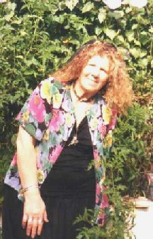
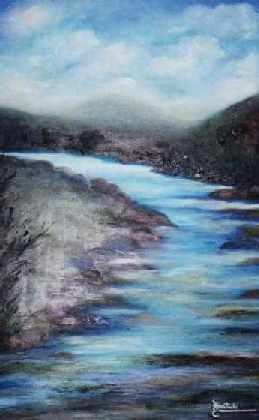
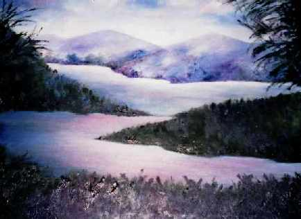
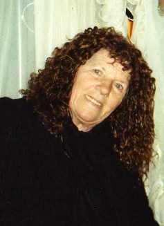

La
mochila con sentimientos
La
mochila con sentimientos
| Autor: Mabel Hurtado -Azul-
(Argentina) http://mabelhurtado.blogspot.com/ |
¡Nuevo!  Sigo esperando...
Sigo esperando...
Sigo esperándote…
Sigo en la carretera esperándote…
Camino sin destino
Espera sin final…
Recojo flores en mi andar
las aprieto sobre mi pecho
su perfume; me embarga.
El recuerdo aflora en mi corazón
Trayendo con él
Tu piel morena
Transparente
Irresistible…
Tu abrazo tibio
¡tiemblo!...
El eco danzando entre los cerros
con los ¡te quiero!
Busco aferrarme a la luna, compañera
inseparable en noches plenas
cuando un cielo vestido de miles de estrellas
iluminaba días felices…
Recuerdo que nuestras bocas
se unían, eran
racimos de jugosas fresas
con sabor a amor…
Sigo en la carretera esperándote…
¡Esta amaneciendo!
Azul...
Algunos aportes anteriores
Collar de amor
Han pasado varios e interminables inviernos…
Los vaivenes cotidianos; hechos rutina
no han sido impedimento para
sentir los latidos de un corazón ausente,
más siempre está latente, se agiganta cada día
Palabras que vienen envueltas en caricias
manos entrelazadas, jugando aquel verano
resplandeciente, en amaneceres plenos, dibujando
en la arena corazones…
Desde entonces los domingos son eternos
Busco en el cofre de los recuerdos…
Miro fotos tan frescas, trasparentes que tú
sacabas en lugares tan hermosos, sugestivos.
Conservo una carta, que no está borroneada por el
paso del tiempo, tu letra majestuosa, imponente
algunas palabras están tocadas suavemente
cual gotas de rocío mañanero besan los pétalos de rosas…
Juego sin darme cuenta, con el collar de amor
ese que nos selló por siempre, que amé, y que
amaré, siento que me trae la suavidad de tus
manos de aquel día maravilloso, cuando
lo prendías de mi cuello
Se adormece el domingo, cierro el cofre…
Escriben mis duendes
Sube como un manto de lluvia
la tristeza…
Se desprende del cuerpo cual velo
su transparencia
Busca en el horizonte
el amanecer eterno
Siempre la tan ansiada búsqueda…
Escapa de las tinieblas
esas que empañan el alma.
Y la vuelven gélida…
El corazón vuela con su mente
bebe la savia de la creación
inspirado en los rojos, anaranjados
y azulados, que se visten los jardines
en primavera…
Aún sabiendo que llevamos
a cuesta el vacío
mendigando a la sombra
la otra cara…
 El Camino…
El Camino…
Caminar sin un lugar
definido…
Estoy transitando por un
lugar arbolado…
no sé qué lugar es…
Siento olor a violetas…
Cierro mis párpados
imagino un rojizo sol, asomando
detrás de las montañas
Mi fatiga se tranquiliza
Mi corazón huyó de las clásicas obligaciones
Una llovizna suave
cae sobre mi rostro
Ahora, el olor es a tierra mojada…
Abro mis ojos,
veo huertos
repletos de frutos…
¿Caminé tanto?…
¿Estaré cerca del camino
que me lleve a casa? …
Sin rumbo…
Camino sin sentido…
Veo enjambres de rostros grises,
que van y vienen…
Al dolor, no puedo lograr que se marchite…
Mis palabras tienen frío, tiemblan
Temo a la oscuridad…
Busco la luz de la transformación
Te siento… Escapo…
Mi piel está oxigenada con desaliento
Mis poros destilan veneno
Se desean subir “al carajo”, y desde ahí
Navegar en aguas, de tiempos nuevos
. . .
Las veces que he tenido el gusto de conversar con esta escritora- pintora, me ha comentado acerca de la "mochila" de tiempo que carga sobre sus espaldas...y sí..., su historia no ha sido fácil. Pero, creo que todos aquellos que podemos contar varias
décadas de vida, tenemos una historia Le pedí que me hablara sobre ella y con esas sonrisas
y simpatía que la caracteriza, me relató "Actualmente, estoy viendo cómo saltear las
baldosaas flojas y poder seguir caminando; libremente, con fortaleza...
aunque un día del pasado, el río se desbordó,
llegando hasta mí, |
 |
Pensar...-que pienso-... tener mi corazón abierto, mis manos extendidas...
Y mi vida, qué puedo decir...: Mis caminos blancos, mis surcos, son fieles a vivencias, alegrías, dolores, ausencias...
 Pintura de Mabel Hurtado. |
Amo la vida, los niños...de la amistad hago un culto, acomodo mi familia para darle ternura, mi pensamiento está siempre con ellos...
Mi dedicación es seguir escribiendo, creando, pintando paisajes con mucha luz y color.
Mi sueño es tener la fortaleza de acero, seguir apostando a la vida; construir muros de cristal y seguir siendo la eterna enamorada del amor.- Y por qué, no... de vez en cuando convertirme en mariposa para poder volar." Aquí va uno de sus hermosos escritos: "No sé qué cambió..." "No sé qué cambió... Antes,
no hace mucho, aunque a mí me parezcan siglos, mi corazón
ardía de pasión. El mate, la silla de paja... Cuántos árboles han crecido desde entonces, nada hacía suponer, los pantanos se extenderían formando caminos con piedras filosas.
|
No sé qué cambió... Todavía faltan días para el invierno y ya mi pulso está demasiado acelerado. Se mezclan en mis pasos, mi itinerario de palabras, de sueños, de manos extendidas y ahora, me detengo en mis nudosos y profundos nudos... ¡¿Qué pasó?! Tal vez, quise zambullirme en ahogos eternos, en sonrisas imaginarias. Mis pasos rápidos, aunque serenos, desean llegar a la puerta de mi antigua casa, con grandes ventanas y un jardín repleto de violetas..." |
 Pintura de Mabel Hurtado. |
 |
"Nací en Buenos Aires-
Argentina(Remedios de escalada) Soy madre de cinco hijos. Amo a Unquillo: lugar que adopté como si fuera el natal. Vivo en estas sierras poéticas desde hace tres décadas. Soy autodidacta. En todo lo que he incursionado, sobre todo prevalece el amor, ése que brota desde lo más profundo de las arterias. En mis paisajes predominan los colores de la vida, que son parecidos a los del arco iris. Tengo una colección llena de amor de libros para niños. Cinco editados y dos inéditos que he leído en colegios locales, en la biblioteca y en la Casa de la Cultura de mi localidad. En cuanto a mis obras pictóricas, he realizado exposiciones en la Cooperativa de agua, Banco Provincia de Córdoba y en el salón dorado de la Municipalidad. Tengo publicaciones compartidas con escritores locales. Edité la novela “Respuestas ocultas dentro de un espejo” y el pasado julio, en la biblioteca presenté:“ Volando hacia la transparencia” un libro de poesía dedicado a la mujer. Actualmente concurro al Taller Literario "Aguante Cultura", dirigido por las profesoras Marta Rivolta y Maria Celia Seveso. Sigo escribiendo, pintando, haciendo artesanías, poniendo en cada cosa un pedacito de un sensible corazón de azúcar, así me decía una gran escritora que partió al bosque de los sueños... Amo por sobre todo, a mis amados e inseparables duendes y a mis soles los niños; ellos son mi inspiración de cada día." |
Musicalización joh_smao